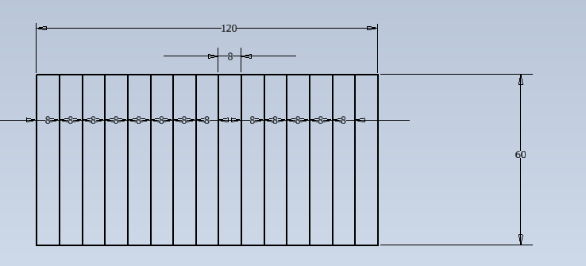
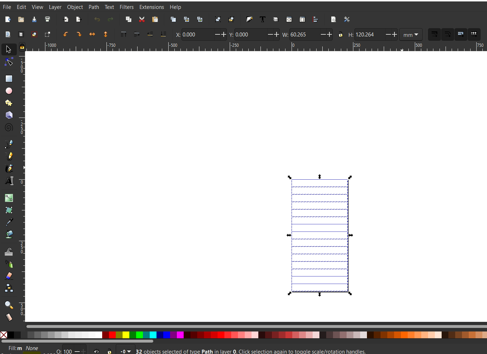
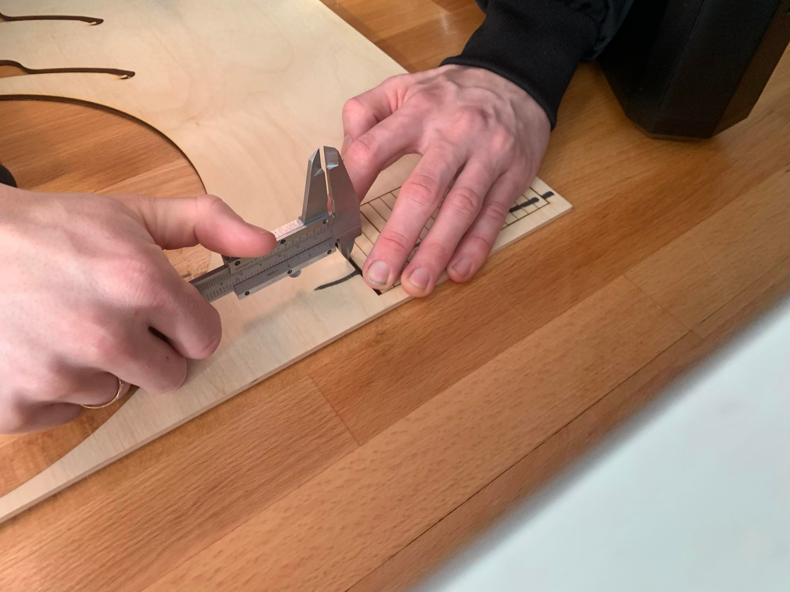

Kerf Test
Við byrjuðum á því að leita okkur upplýsinga um hvernig væri best að gera kerf test. Við fundum góðar leiðbeiningar á Instructables.com, hægt að fara á síðuna í gegnum þennan hnapp.
Við fundum að best væri að teikna marga ílanga ferhyrninga í röð, svo við teiknuðum það í Inventor
og færðum svo teikninguna yfir í Inkscape svo við gætum skorið teikninguna út í lasernum.
Skárum svo þessa teikningu og mældum því næst bilið sem myndast hægra megin ef við ýtum öllum ferhyrningunum lengst til hægri.
Við teiknuðum 15 ferhyrninga sem gerir þá 16 skurði og mældum bilið 2.5mm og deildum því í 16 sem gerir kerfið að 0.15625mm